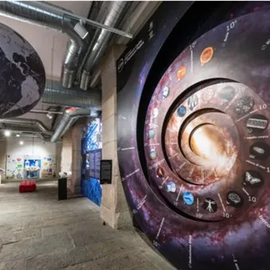

da sab 28 nov a sab 12 dic
Immaginario Scientifico di Trieste - Arte e scienza, due linguaggi per osservare il mondo
Sabato 28 novembre all'Immaginario Scientifico di Trieste il primo appuntamento del ciclo “Incontri di scienze... umanistiche”. Lo storico dell'arte Maurizio Lorber racconterà i legami tra ricerca artistica e metodo scientifico. Cosa accomuna un artista del Rinascimento e uno…
 Indicazioni
Indicazioni
- Costi e prenotazioni
- Costo non indicato · Prenotazione non indicata
- Programma
- Programma da verificare. Apri la fonte ufficiale per orari e possibili aggiornamenti.
- In caso di maltempo
- Nessuna indicazione specifica pubblicata.
- Note
- Acquisito automaticamente dalla fonte.
L’EVENTO
Descrizione completa
Sabato 28 novembre all'Immaginario Scientifico di Trieste il primo appuntamento del ciclo “Incontri di scienze... umanistiche”. Lo storico dell'arte Maurizio Lorber racconterà i legami tra ricerca artistica e metodo scientifico.
Cosa accomuna un artista del Rinascimento e uno scienziato? Molto più di quanto si possa immaginare. Entrambi osservano la realtà, ne studiano le forme, cercano di comprenderne le regole e di rappresentarle. È proprio da questa idea prende spunto "Visioni del sapere: dialogo fra arte e scienza", il primo appuntamento del ciclo Incontri di Scienze... umanistiche, in programma sabato 28 novembre alle ore 16.00 all'Immaginario Scientifico di Trieste.
Protagonista dell'incontro sarà Maurizio Lorber, storico dell'arte e docente universitario, che accompagnerà il pubblico in un percorso dedicato ai profondi legami tra ricerca artistica e metodo scientifico. I disegni di Piero della Francesca e Leonardo per esempio illustrano in modo perspicuo e ingegnoso, come si concepisce un teorema prospettico, un problema costruttivo, un'indagine anatomica. È anche la concezione operativa sviluppata da Filippo Brunelleschi e Lorenzo Ghiberti, considerati precursori dell’idea moderna di progresso.
Maurizio Lorber insegna Didattica interculturale dell'arte presso il Dipartimento di Studi Umanistici e del patrimonio culturale di Udine. Ha pubblicato testi in ambito locale (Un magico taccuino: intrecci di storia e arte a Trieste) e di metodologia storico artistica (Una vera scienza dell'arte. Giovanni Morelli e l'occhio del conoscitore e recentemente Rudolf Arnheim and the cultural Context of Germany in the late 1920s and early 1930s).
L'incontro inaugura il ciclo Incontri di Scienze... umanistiche, un progetto realizzato con il contributo della Regione Friuli Venezia Giulia e con la collaborazione dell'Università di Trieste, con cui l'Immaginario Scientifico propone una riflessione sulla conoscenza come territorio senza confini rigidi, con un unico filo conduttore che unisce tutte le forme della ricerca.
Gli incontri successivi saranno sabato 5 dicembre, con “Pinocchio negli abissi: letteratura, mare e immaginario”, condotto da Rosa Necchi, e sabato 12 dicembre, con l'incontro “Dai disegni di Galileo ai marziani: immagini tra scienza e arte”, tenuto da Andrea Strollo.
Ogni incontro sarà accompagnato dalla proiezione di una multivisione dell'Immaginario Scientifico, a sottolineare il ruolo delle immagini nella divulgazione e nella costruzione della conoscenza.
Gli incontri sono compresi nel biglietto al museo e non richiedono prenotazione.
IL PROGRAMMA
Programma e orari
Appuntamenti raccolti dalle fonti elencate. Dove manca un orario, non è ancora disponibile in questa scheda.
Programma pubblicato
- Dal 2026-11-28 al 2026-12-12
INFORMAZIONI UTILI
Prima di partire
- Controllare la fonte prima di partire.
ORGANIZZAZIONE